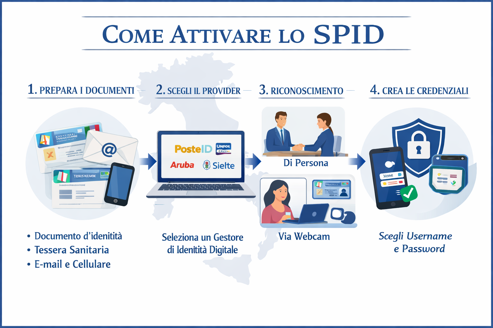

Procedure di Attivazione e Riconoscimento SPID
L’attivazione dello SPID segue procedure precise per garantire l’identità dell’utente. Le linee guida stabilite da AgID definiscono tutti i passaggi, dalla preparazione dei documenti al riconoscimento, fino alla creazione delle credenziali.

1. Preparazione dei documenti
Prima di tutto, occorre essere maggiorenni e avere pronti i documenti necessari:
- Documento d’identità italiano valido (Carta d’Identità, Passaporto, Patente)
- Tessera Sanitaria con codice fiscale
- Indirizzo e-mail e numero di cellulare personali
2. Scelta dell’Identity Provider
Una volta raccolti i documenti, si sceglie un Gestore di Identità Digitale accreditato da AgID. È possibile confrontare provider come Poste, Aruba, InfoCert, Sielte, Namirial e altri, valutando le modalità di riconoscimento offerte e i costi.
3. Riconoscimento dell’identità
La verifica dell’identità è il cuore del processo SPID. Il provider deve confermare chi sei attraverso metodi certificati:
- Di persona: recandosi a uno sportello fisico del provider
- Via Webcam: videochiamata con operatore che verifica i documenti
- Audio-Video con bonifico: breve video e bonifico simbolico da un conto intestato all’utente
- Con CIE, CNS o Firma Digitale: autenticazione completamente online con strumenti certificati
4. Creazione delle credenziali SPID
Dopo il riconoscimento, si impostano le credenziali: username, password e eventuale secondo fattore di sicurezza. È importante conservare queste informazioni in modo sicuro.